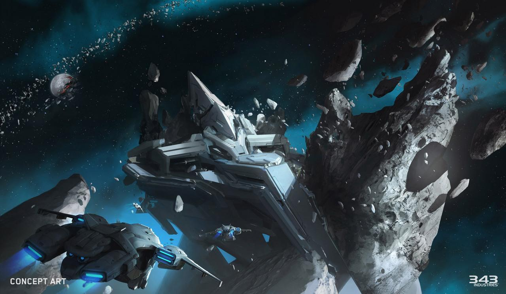
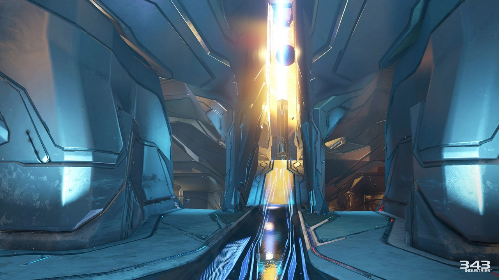
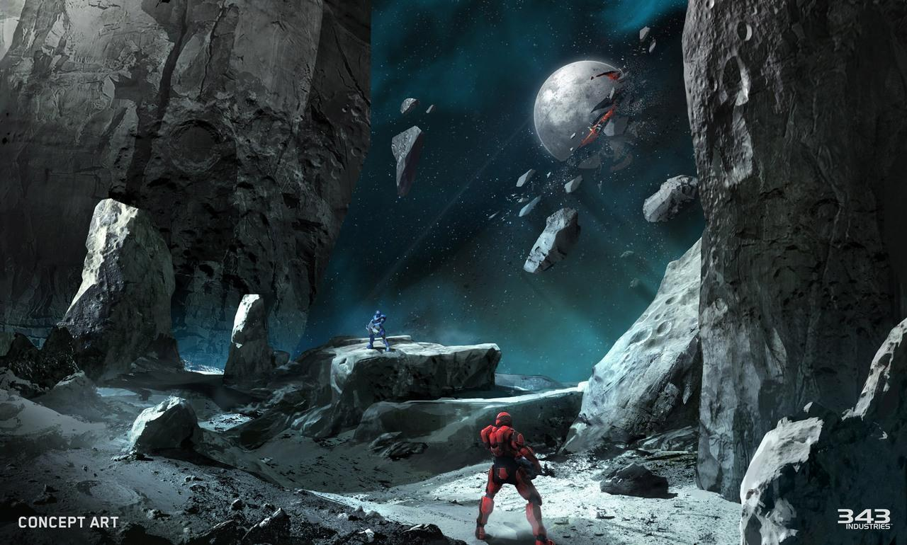
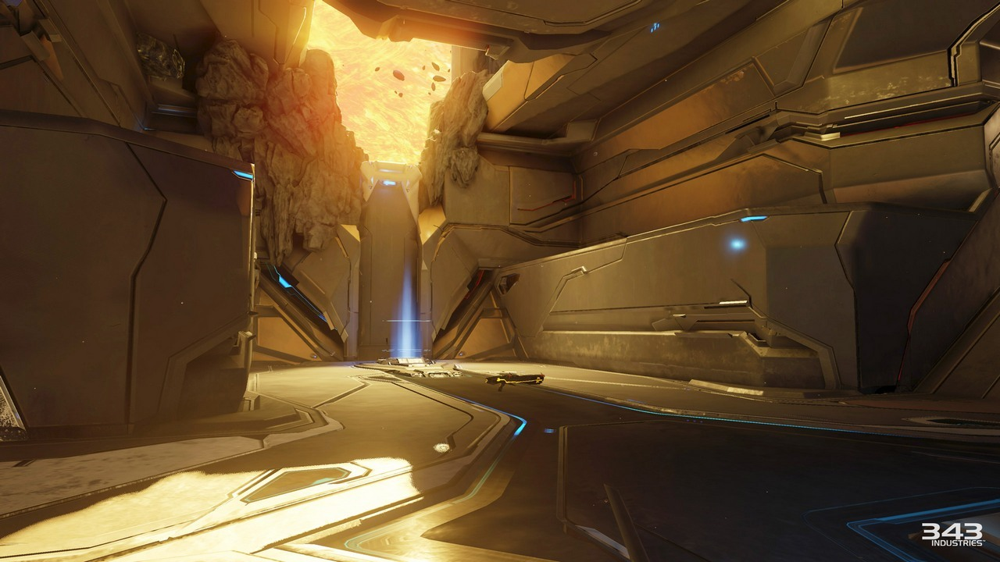
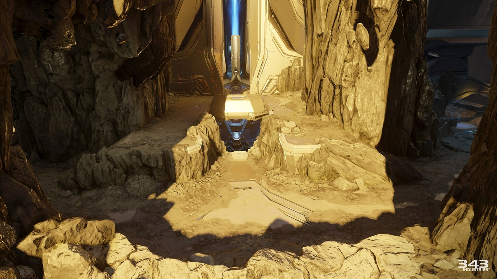
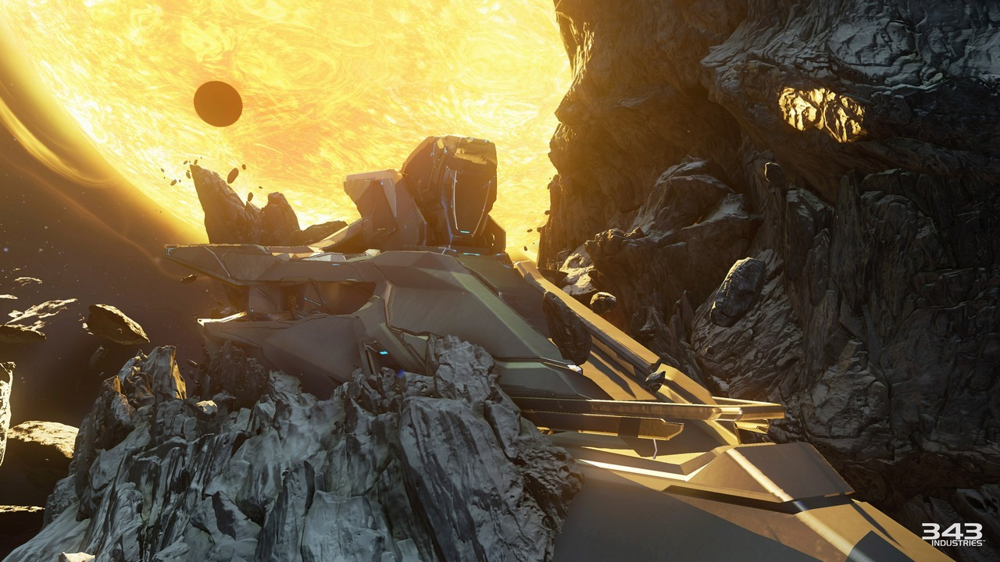

The other map coming with Ghosts of Meridian is a Forerunner Arena map - Tyrant! It’s a small-scale symmetrical map that was made for CTF and Assault game types
Learn more here http://www.gamespot.com/…/next-halo-5-free-dl…/1100-6436142/